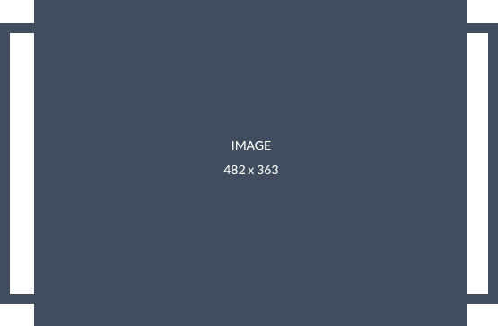

Horario: Lunes a sábado — 8:00 a.m. a 6:00 p.m.
300 000 0000

Si presentas dolor intenso, inflamación facial, dificultad para abrir la boca, infección dental, trauma o molestias después de una cirugía, solicita una valoración para definir el manejo adecuado.
Contactar ahoraCada caso requiere una evaluación individual. Se revisan síntomas, antecedentes, radiografías, tomografías o exámenes disponibles para planear un tratamiento seguro y bien indicado.
Agendar valoraciónProcedimientos enfocados en resolver problemas de cordales, ausencia dental, lesiones orales, infecciones, alteraciones de encía, hueso, mandíbula y estructuras maxilofaciales.
Ver serviciosLa cirugía maxilofacial es una especialidad que evalúa, diagnostica y trata condiciones relacionadas con la boca, los maxilares, la mandíbula, los dientes incluidos, los tejidos orales y ciertas alteraciones del rostro. En Bogotá, muchas personas consultan a un cirujano maxilofacial por dolor de cordales, necesidad de implantes dentales, infecciones odontogénicas, lesiones en boca, quistes, tumores benignos, problemas mandibulares o procedimientos quirúrgicos solicitados por su odontólogo tratante.

La extracción de cordales es uno de los procedimientos más frecuentes en cirugía oral y maxilofacial. Antes de indicar la cirugía, se realiza una valoración clínica y radiográfica para conocer la posición del diente, su cercanía a estructuras importantes, el estado de la encía, el nivel de inflamación y la complejidad del caso. Algunas cordales pueden extraerse de forma sencilla, mientras que otras requieren un abordaje quirúrgico más cuidadoso por estar incluidas, retenidas o parcialmente cubiertas por hueso o encía.
Consultar por cordalesAntes de colocar un implante dental, el cirujano maxilofacial evalúa la cantidad y calidad del hueso, el estado de la encía, la mordida, los dientes vecinos, los antecedentes médicos y las imágenes diagnósticas. En algunos pacientes es posible colocar el implante directamente, mientras que en otros casos se requiere una cirugía previa, como injerto óseo, elevación de seno maxilar o manejo de tejidos blandos.
Valoración para implantesNo todos los procedimientos quirúrgicos de la boca son iguales. Algunos pueden ser simples y rápidos, mientras que otros requieren planeación, imágenes diagnósticas y un enfoque especializado. La cirugía oral puede incluir extracción de dientes complejos, retiro de restos radiculares, exposición de dientes incluidos para ortodoncia, biopsias de lesiones orales, cirugía de frenillos, manejo de quistes pequeños y procedimientos sobre encía o hueso.
Ver cirugía oralEl trauma maxilofacial puede afectar dientes, encías, labios, mejillas, mandíbula, maxilar, pómulos o estructuras cercanas. Algunas señales de alarma incluyen dolor al morder, movilidad dental, sangrado, heridas en boca, inflamación marcada, cambios en la mordida, dificultad para abrir la boca o sensación de que la mandíbula no encaja correctamente.
Solicitar valoraciónMuchas personas consultan por dolor cerca del oído, cansancio al masticar, bloqueo mandibular, chasquidos, dolor de cabeza, apretamiento dental o molestias al abrir y cerrar la boca. Estos síntomas pueden tener diferentes causas, por lo que es importante realizar una valoración completa antes de indicar tratamientos.
Evaluar dolor mandibularUna lesión oral puede tener múltiples causas: trauma, infecciones, irritación crónica, alteraciones de glándulas salivales, quistes, lesiones benignas o enfermedades que requieren diagnóstico. Cuando una lesión no desaparece, aumenta de tamaño, sangra, duele o genera preocupación, es recomendable realizar una valoración.
Consultar lesión oralDebes consultar cuando tienes dolor de cordales, inflamación facial, infecciones dentales repetidas, dientes retenidos, lesiones en boca, ausencia dental para implantes, dolor mandibular o antecedentes de trauma facial. También es recomendable acudir si tu odontólogo general u ortodoncista solicita una valoración quirúrgica antes de continuar un tratamiento.
No siempre. Algunas cordales erupcionan bien, tienen espacio y pueden mantenerse bajo control. Sin embargo, cuando están retenidas, inclinadas, generan dolor, inflamación, caries, infecciones o afectan dientes vecinos, puede recomendarse la extracción. La decisión debe tomarse después de una valoración clínica y radiográfica.
Antes de un implante se debe evaluar el hueso disponible, la salud de las encías, la mordida, los dientes vecinos, los hábitos del paciente y las imágenes diagnósticas. En algunos casos se necesita injerto óseo antes o durante el procedimiento. La planeación correcta ayuda a lograr un resultado funcional, estable y estético.
Después de una cirugía oral es importante seguir las indicaciones del especialista, tomar los medicamentos formulados, evitar esfuerzos, cuidar la alimentación, mantener higiene adecuada y asistir a controles. Las recomendaciones pueden cambiar según el procedimiento realizado y la condición del paciente.
La extracción de cordales debe planearse con cuidado, especialmente cuando el diente está cerca del nervio, incluido dentro del hueso, inclinado contra el segundo molar o asociado a infecciones frecuentes. También se valoran dientes retenidos que pueden requerir exposición quirúrgica para tratamientos de ortodoncia.
Agendar valoraciónCuando falta uno o varios dientes, el implante dental puede ser una alternativa estable. Si no hay suficiente hueso, pueden requerirse procedimientos complementarios como injertos óseos o elevación de seno maxilar. La valoración define la viabilidad del tratamiento.
Consultar implantesLas lesiones en boca deben revisarse cuando no sanan, cambian de tamaño, causan dolor, sangran o generan molestias. El cirujano maxilofacial puede indicar seguimiento, retiro quirúrgico o biopsia según las características del caso.
Solicitar revisiónEl dolor mandibular puede relacionarse con articulación temporomandibular, músculos, mordida, bruxismo, trauma o inflamación. Una valoración ayuda a identificar la causa probable y definir un plan de manejo individual.
Evaluar ATMIncluye extracción de dientes complejos, restos radiculares, frenillos, regularización ósea, manejo de infecciones localizadas, cirugía preprotésica y otros procedimientos indicados por valoración clínica.
Ver procedimientosDespués de un accidente o golpe en la cara, es importante revisar dientes, huesos faciales, encías, labios, mordida y movilidad mandibular. Una evaluación oportuna permite detectar lesiones y definir el manejo adecuado.
Atención por traumaAntes de realizar una cirugía maxilofacial, es fundamental entender qué problema se va a tratar, por qué se recomienda un procedimiento y qué alternativas existen. Una buena valoración no se limita a mirar un diente o una radiografía; también considera el dolor, la inflamación, el estado general del paciente, la anatomía, los antecedentes médicos y el objetivo final del tratamiento.
En una consulta de cirugía maxilofacial se pueden resolver dudas sobre cordales, implantes, injertos, lesiones orales, dolor mandibular, infecciones o procedimientos indicados por otro profesional. La meta es que el paciente tome una decisión informada y sepa qué esperar antes, durante y después del tratamiento.
Si tienes dolor de cordales, inflamación, ausencia dental, molestias en la mandíbula, una lesión oral o necesitas una cirugía indicada por tu odontólogo, solicita una valoración especializada. Revisaremos tu caso y te orientaremos sobre el tratamiento más adecuado.
Solicitar valoración ahoraEncontrar un cirujano maxilofacial en Bogotá es importante cuando un problema oral o facial requiere una valoración más especializada que la odontología general. Esta especialidad se enfoca en el diagnóstico y tratamiento de condiciones relacionadas con dientes incluidos, cordales, hueso maxilar, mandíbula, encías, tejidos orales, articulación temporomandibular, lesiones orales, trauma facial e implantes dentales.
Muchas personas llegan a consulta porque presentan dolor en las cordales, inflamación recurrente, infecciones dentales, dificultad para abrir la boca, dolor al masticar, pérdida de dientes, necesidad de implantes, lesiones que no sanan o procedimientos quirúrgicos solicitados por su odontólogo. En todos estos casos, la valoración permite definir si se requiere cirugía, qué tipo de procedimiento es más adecuado y cuáles son los cuidados necesarios.
La cirugía maxilofacial no debe entenderse solamente como "sacar muelas". También puede participar en la planeación de tratamientos de rehabilitación oral, implantología, ortodoncia, manejo de lesiones, biopsias, injertos óseos, corrección de alteraciones anatómicas y evaluación de problemas funcionales de mandíbula. Por eso, una consulta especializada puede ser clave para evitar complicaciones, resolver dudas y tomar decisiones con mayor seguridad.
En Bogotá, los pacientes suelen buscar atención maxilofacial por procedimientos como extracción de cordales, cirugía oral, implantes dentales, injertos óseos, cirugía preprotésica, biopsias orales, manejo de quistes, dolor mandibular, bruxismo, alteraciones de la articulación temporomandibular y trauma facial. Cada caso debe evaluarse de manera individual, porque la indicación de tratamiento depende de los síntomas, el diagnóstico, la anatomía del paciente y los estudios disponibles.
Una valoración adecuada incluye revisar el motivo de consulta, antecedentes médicos, medicamentos, alergias, procedimientos previos, imágenes diagnósticas y expectativas del paciente. Si se requiere cirugía, también se explican los pasos del procedimiento, el tipo de anestesia, los cuidados antes y después, los signos de alarma y el tiempo estimado de recuperación.
Si estás buscando un cirujano maxilofacial en Bogotá, agenda una valoración para revisar tu caso de forma personalizada. Ya sea por cordales, implantes dentales, cirugía oral, lesiones en boca, dolor mandibular, infección o trauma facial, recibir orientación especializada puede ayudarte a tomar una mejor decisión y planear el tratamiento adecuado.
Solicitar valoración ahoraEste contenido es informativo y no reemplaza una valoración médica, odontológica o psicológica. Ante síntomas persistentes, cambios relevantes o signos de alarma, la evaluación debe realizarla un profesional habilitado.
También podés revisar otros recursos del ecosistema Digitales Colombia:
Marketing digital · Salud en Colombia · Abogados en Colombia · Servicios locales Bogotá · Alojamientos y turismo